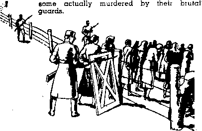

Contents
The Pope’s Responsibility for the
Spanish Inquisition Progressing
In Dixie Land
Counsel by Judge Rutherford
Nazi Penetration of Switzerland
Daladier Scuttling French Republic
New Government
Greece, Turkey and Albania
British Comment
Appetizers W J
Picking Flaws in the Remnant1 2 [■ £ .
From the time that she was old enough io , say her “Now I lay me down to sleep” evei$ night at her mother’s knee, Carolyn would end her evening devotion thus: “God, please send me a little baby brother to play with.” Years passed and no baby brother. Then Carolyn changed her petition to include, if baby brothers were not available, a baby sister. After a few years the baby sister arrived and Carolyn became her devoted slave. It wasn’t long, however, before “baby sister” became so active that she was quite a problem to Carolyn. One day Carolyn was telling her domestic troubles to her grandmother, complaining that she just couldn’t manage her little sister. She was almost ready to forsake her job of baby-tending. Her grandmother asked : “Carolyn, didn’t you ask God to send you a little sister?” “Yes, . grandmother,” was the reply, “but this wasn’t the kind I wanted.”-—Aunt Maud.
Sure Enough!
A London missionary society recently received a report from the interior of Africa telling pf a visit of one of its members With an old Negro cannibal of the tribe of NiamvNiam. . The missionary was telling the old cannibal about the World War, and how many- lives it cost.
“But how could so much human meat be eaten ?” asked the astonished old black.
“We whites,” answered the missionary proudly, “do not eat humans.” ■ '
‘“Well, then, what did you kill them for?” asked the cannibal in great amazement.,— Southern Farmer. . -
In Deference to the Pope
A hungry Irishman entered a restaurant on Friday and said to the waiter: “Have yez any whale?” ■
“Nd,” said the waiter.
“Have yez any shark ?”
“No.”
“Have yez any swordfish ?”
“No.”
“Have yez any jellvfish?”
“No.” ' . ■ '
“All right,” said the Irishman, “then bring me ham and eggs and beefsteak smothered wid onions. Anyway, I axed for fish.”
CONSOLATION
“And in His name shall the nations hope.”—Matthew 12:21, A.R.V.
Volume XXI Brooklyn, N.Y., Wednesday, November 1, 1939 Number 523
The Pope’s Responsibility for the New War
(In Three Parts—Part 2)
Netherlands in the Net
THE Roman Catholic Hierarchywants nothing less than complete control of the whole world, and no country and no situation is left unnoticed.
The Catholic press of Europe is well pleased with the new cabinet which will govern the Netherlands. The ministers for fiscal and colonial affairs are Catholics. The premier is rated to be an able politician and financier, which means, of course, that he is an opportunist. The Netherlands is now caught in the net. When Catholic pressure overthrew the previous cabinet Queen Wilhelmina asked the Catholics themselves to form a cabinet; but they thought best to have somebody else shoulder the responsibility for their acts, so the choice fell on a politician. They will get what they want and he can take the blame. Good scheme, eh?
The reason why the Colijn cabinet of the Netherlands was overthrown was that the Minister of Justice, C. M. I. J. Gosse] ing, who is a Catholic, hindered legal proceedings in an accusation of moral offense involving two priests. It was a question of standing by his country and his oath of office or by the priests and the Vatican, dirt or no dirt, and he stood by the priests and dragged the whole government down with him.
After his government went down, Dr. Hend-ryk Colijn, the former premier of the Netherlands, in an interview with Anne O’Hare McCormick, made a statement, as reported in the New York Times, that is well worth reading by any thoughtful person. He said:
Everywhere the forms of government are changing, and the constant characteristic of that change is that government is taking over more power. In a great part of Europe governments have gone the whole way in one leap and taken over everything. I believe this is a period of great upheaval like the' first half of the sixteenth century, ushering in a new time whose shape we cannot see. Forms don’t matter much, but the substance we have fought for matters, and I who head a government tell you that we have to fight today against being overwhelmed by government or we are lost.
Does it not seem too bad that the Netherlands must lose the services of a man who seems to see quite clearly the Totalitarian Monstrosity lunging breakneck ahead to the enslavement of humanity? But the victory will be short.
The Rape of Czechoslovakia
In the German rape of Czechoslovakia the forests are being destroyed and the lumber carted to Germany; the windows are being taken out of public buildings and the frames and glass transported to Germany; all the gold and all raw materials and supplies have been carried to Germany; factories are being ruined because the machinery is being carried to Germany. The Czechs may open their own safety boxes only in the presence of the Gestapo. Czech specialists estimate that already thirty-five billion crowns ($1,036,000,000) of Czech property “has been robbed and transported to Germany".
A part of the cost of the Munich betrayal was that the Western democracies lost about 2,000,000 of the best-equipped, best-trained and most gallant soldiers in Europe, $1,500,000,000 worth of weapons, $500,000,000 w’orth of fortifications, and $5,000,000,000 worth of factories and armament works, all of which are now in German hands. Hundreds of medals won in the World War by Czechoslovakians are back in the hands of the British and French legations, returned by the embittered and disillusioned Czechs.
German hunger for everything good is thinly disguised. The German troops that overran Czechoslovakia ate so much good food that they suffered from indigestion. Only their officers had overcoats; the men themselves were thinly clad in inferior clothing. Their trucks, cars and military cycles often stalled. They seized iron, brass and copper wherever they could get it. In Prague, brass water-closet chains were seized and replaced bv ropes.
Take a moment to think of the 120,000 little folks, the little Spanish and Jewish and Polish and Czechoslovak children, boys and girls, that are homeless wanderers in the earth as a result of the seizures of Spain and- Czechoslovakia and the similar deviltries of Hitler and Mussolini and Franco. Of this number, ‘ 34,000 are not even in their native lands. How the great and good God must hate all the men responsible for this state of affairs 1
The War "Forced” on Germany
Field Marsha] Goering can lie almost as badly as Hitler. He told the 14,000 German troops, on their return from Spain, “We do not shrink from war when it is forced
on us.” If anybody forced Germany into that war to destroy the Spanish Republic it was the pope. It seems that alirt'ost every nation that was on that Non-Intervention Committee felt forced to see what it could do to win the war for Franco. Germany would never have had the chance to rush to Franco’s aid two days before he asked for it except for the treachery of a Roman Catholic Briton, who was “forced” by somebody to fly to the Canary islands and turn his plane over to The Butcher.
When German troops returned from Spain, whither they went “to crush Bolshevism”, , Hitler assured them that they had been used to fight the democracies which had threatened to turn all Europe into a shambles. And then, not mentioning the lying, murderous and hypocritical services he had rendered, along with the democracies, to insure the success of non-intervention in the war, he went over, bag and bagghge, into the arms of Stalin— supposedly puzzling the pope, the cleverest crook of them all.
Nobody today pays much attention to the uncovering of old lies, but there was a time not so long ago, back in the days of hypocritical “non-intervention” in the war in Spain, and when Italy was one of the guarantors of such “non-intervention”, that it was stoutly claimed there were no Italian troops in Spain: that there were merely a few thousand Italian volunteers. But since the war is over, and the troops are returned home, the -official Italian military weekly, Forze- Armate, admits that, during the war, 100,000 men were transported to Spain in four months. Also, 6,000 Italian airmen participated in the work of bombing women and children in Spanish cities. All this was denied at the time.
Italy was one of the nations that “helped protect” the Spanish coast from intervention, and now boasts that Italian air pilots carried out 5,318 bombing raids in its destruction of the Spanish Republic.
Canada Will Be in It
It is no news to Canadians that for some time the Roman Catholic Hierarchy has been openly conniving with the enemies of the people to take away their liberties.
In September, 1937, the home of Albert Ouellette, Montreal, was entered by the provincial police late one evening. There was no one at home but the children at the time, but the police read the search warrant to the children and proceeded to search the place. They seized Ouellette’s books, papers, records, and even personal letters which Mrs. Ouellette had in a trunk. As the police were leaving, Mrs. Ouel’ette returned. They told her what they had been doing. Mr. Calder, K.C., who was ■ asked to replevin the material taken, wrote to the commissioner of provincial police demanding the release of the material. He received a reply stating that they had no record whatsoever of the seizure. The Montreal city poli.e denied having made the seizure, and there is no way of proving that it was made by the provincial police. The material taken has not been returned and nothing further can be done.
In April, 1939, the home of Mrs. Raymond, Maisoneuve, Montreal, was raided by the provincial police one evening when a French model Bible study was being conducted in the home. They had a warrant from the attorney general’s department to search the house. They took the names and addresses of all present and seized all books, booklets, and one phonograph. The following were taken: 56 books; 342 booklets; 1 phonograph; 30 records; 1 book containing baek-eall addresses; 1 book containing addresses where model studies had been started.
In April, 1939, the home occupied by the pioneer witnesses at Montreal was raided and
a large quantity of literature seized, as well as phonographs and records. Ten days later seven pioneers who were in the home at the time of the seizure, and whose names were taken, were arrested and charged with “seditious conspiracy”.
April 26,1939, the provincial police entered the home of a Mr. Williams in Verdun, Quebec, where the company servant for Montreal lived. They seized his books, phonograph and records, and all his correspondence to and from the Society; also his persona] copies of The Watchtower and Consolation, and certain legal documents which were in his possession in connection with previous court cases in Montreal.
There will be no escape from the Totalitarian Monstrosity except in the Lord’s organization. Indeed there is almost no escape now. Notice the following sample of impudence by the Canada Steamship Lines. Saguenay is a place where people go for vacations, but the racket follows them even there:
“Let them come
Montreal, July —: Special mass kits were placed aboard the S.S. Richelieu before she left Montreal the other day on her first six-day cruise up the Saguenay this year. The special equipment will facilitate the saying of mass aboard the steamer by more than 100 pilgrims to the Shrine of Ste. Anne de Beaupre. The pilgrims are to visit Ste. Arine under the supervision of Brother Aloysius of the Rede mp tori st Fathers of New * York following their cruise up the Saguenay as far as Chieoutinii, Another pilgrimage-cruise also sponsored by the Redemptorist Fathers leaves New York September 1."
To try to stop the proclamation of the truth by Jehovah’s witnesses, the so-called “Holy Name Society” called upon the Ontario government to establish a board of censors and . enadt a Jaw obliging all publishers, without exception, and all signboard advertisers, to NOVEMBER 1,1939
submit a copy of publication or signboard advertisement to the board of censors. They got away with it as respects the Canadian radio, and probably think they can take the next logical step and get away with this too.
Danzig Already Gone
Everybody knows that, following a tip from his five astrologers (who represent the demons), Hitler knew as early as the middle of July (July 11, to be exact—a dispatch from New York in the San Antonio Light, reporting an interview with Dr. Nicholas Murray Butler, president of Columbia university) that the climax of his career would come in early September, and he had decided then to seize this little “Free” city, the freedom of which was guaranteed by I the late lamented League of Nations. But if they do not know of the astrologers’ advice, they know that he did seize Danzig on Friday, September 1, and the present war followed that act.
Freedom of wor-
UP” ship in the so-called
“Free City of Danzig” was guaranteed by the League of Nations, yet in that city, on May 26 last, 32 of Jehovah’s witnesses were sentenced to prison terms ranging from three years down to six months. Before the arrests, instructions were issued to all Nazi organizations, including the German Maidens and Hit]er Youth, that any who would furnish evidence of activity on the part of any of Jehovah’s witnesses would be provided with positions for life, or, if already holding such position, with cash sums up to 3,000 gulden ($584). The report, translated from the German Consolation, leaves the impression on the mind that 5 of the 37 arrested / turned state’s evidence and were acquitted,
the state assuming the costs. All O.K. Let the Judases go right ahead until the time comes for them to hang themselves; and then let them do that, too.
The United States Will Be in It
■&. It will be a big shoek to the Amer-■& frA find themselves hemmed in on all HlA s^es by ;i Totalitarian Monstrosity taking its orders from Vatican City; but that is what is prophesied to occur, and there have been hundreds of evidences that such will be the case, in the things that have been done to the “watchmen”, Jehovah’s witnesses, and the “Warning” they have given the people. Hundreds of millions of books and booklets have forewarned the people of good will.
' As a sample of what America is in for, notice this item regarding the state of New Jersey, which is completely under the domination of the Roman Catholic dictator Frank Hague. It is well known that the so-called “governor” of the state is merely Hague’s appointee in all essentials, and merely does what he is told to do by the Jersey City boss. The so-called “Religious News Service” sent out the following dispatch, and it is as plain as the nose on one’s face what the real objective of the machine was. The bill mentioned was another bill passed on purpose to “get” Jehovah’s witnesses, the “watchmen”, and for no other reason.
In Trenton, N, J., Gov. A. Harry Moore has signed a bill which will make any person, society or corporation which attempts to influence a school pupil in New Jersey against saluting the United States flag guilty of a misdemeanor. The maximum * penalty for a disdemeanor in New Jersey is three years’ imprisonment and a $1,000 line. The importance of the new law becomes apparent when it is realized that under its terms the entire New Jersey membership of the Jehovah witnesses sect, as well us similar believers, will be open to charges of committing misdemeafiors.
It is possible that “Father” Coughlin may be the tool of the Hierarchy that will be used to bring the Totalitarian Monstrosity in the United States, as Hitler brought it in Germany. Or it may be Roosevelt or Farley. It is anybody’s guess, but, because Coughlin uses the Hitler propaganda and Hitler methods, there is here published an article in regard to him which originally appeared in the Sozial-istische Warte, Paris, with footnotes by the translator.
Coughlin is known everywhere as a cheap propagandist, Fascist and liar, who also preaches racehatred. The question is not where he stands, but how many people are supporting him, and what is his position within the Catholic church.
About the number of his followers there are only guesses; it is not even known whether they have increased in number or decreased. Many of his listeners are merely sensation hunters; and since his talks are a mixture of anti-Semitism and pseudo-social reform plans, and since he frequently criticizes social injustice and even claims to be friendly toward labor organizations, he can easily confuse heads, especially by touching the sore spots of his listeners. The Christian, patriotic, humanitarian show which he is putting up, and his pathetic, quivering voice with which he makes commonplace expressions sound important, grip the minds of such people who have not found their way. His talks arc a mixture of sentimentality and vagueness. He is similar to Hitler before his ascension to power, when the latter promised everybody everything, if only they would follow him in his destruction of the Jews and the “Marxists”. iCoughlin] denies the charge that he is sympathizing with Hitler. But not only docs be appropriate whole parts of Goebbel’s speeches as his own, but his followers have fellowship with the Nazis in meetings and in other propaganda activities. His publications are sold at “Bund” gatherings.
Since Americans do not like uniformed discipline, and also the streets there are not made for marching columns of troops, it is not much <Alt of the way to assume that Coughlin is holding himself forth as a Fuehrer* after the American fashion who is gathering together the masses for Fascism in the event the political and economic situation becomes opportune. He does not want to gather the masses with military shows; rather the ‘line-up’ is adapted to American modes. Americans love the radio, and Coughlin may well dream of how he will call upon the ‘nation’ through the microphone to send telegrams and letters to their congressmen demanding a Fascist regime.
While we hold Coughlin as one of the chief threats in that country, we have to examine whether he is acting as a private person or has the approval, yea, even the support, of the Catholic church. That he is a priest is the most important part of his prestige.
Representatives of the church, bishops and cardinals, have expressed themselves against him and have asserted that he speaks as a private person and not as spokesman of the church. This assertion would be satisfactory were it not for the fact that the Catholic church is a hiehakcbal institution: a priest as well as a layman has to obey, or else be
* His followers are now carrying banners in the streets of New York, which road, “Father Coughlin, the Savior of America.’1 excommunicated.3 The church has kept Coughlin in her pale till now. As long as the Hierarchy does that there is little hope that his enemies will be able to defeat him. Therefore the Catholic church, by permitting Coughlin to continue to function as priest, is in fact abetting Coughlin in the establishment of Fascisfn in that country.—F. Williams, in Sozialistische Warte, Paris, France.
Zs Britain in Her Last War?
S Britain has had a stormy voyage among the nations of the earth, with hardly a year of real peace anywhere. But down at its latter end it tried too hard to make peace.
Ferdinand Kuhn, Jr., New York Times correspondent, tells why it was that Chamberlain pursued such a weak-kneed pol icy toward Hitler, when rigid firmness for the right would have left Czechoslovakia intact. Mr. Kuhn observed:
The “class bias” of Mr. Chamberlain’s policy toward Germany and Italy—and by implication toward Spain and Czechoslovakia and Russia— springs from the fear of the propertied groups in this country that a war would shake them from their present comfortable positions of leisure and power.
They are not pro-Faseist, although they have fewer nightmares over Fascism than over Communism ; they simply want things as they are.
One must not imagine that this attitude is peculiar to the Clivedens of England. The “county families”, who live on their dividends, dread anything which would eut those incomes off and perhaps force them to sell their hunting-and-shooting acres.
The business men dread a war which would limit their profits or raise taxation still higher.
And the middle-class suburbanites, in tbeir little stucco cottages, dread war for precisely the same reasons. They lost pitifully in the last war, and they dread having their menfolk' killed or their homes destroyed oy bombs in the next; but they also dread being pushed down into a lower social and economic layer.
It was this same “class bias” that caused the British Government to submit quietly to the loss of 14 vessels engaged in the trade to-Government Spain, with the loss of 33 seamen. There is no question that Britain knew the ships were sunk by Italian bombs. None of these vessels carried arms, and each had aboard one of the so-called “Non-Intervention” officers to see that the cargo was above suspicion. Very little seems to have been said or done about these sinkings and murders, and sympathy with the Franco government has probably had much to do with the silence. Franco is in Chamberlain’s class.
It was this same “class bias” that held Russia off so long, trying to figure out how Russia could be used, but without any benefit to that country itself, until Russia surprised the world by .jumping into Hitler’s outstretched arms.
Within Sight of Totalitarian Unity
Some have seen that Britain must eventually drift into a form of Fascism. J. A. Williams, Lithuania, writing on this subject said:
For several years past, in his writings and lectures, Judge Rutherford has given Biblical evidence to prove that Great Britain and the United States of America will ultimately be controlled by governments similar in style to the Totalitarian monstrosities ndw rampant in Europe.
Some of those who formerly associated themselves with the witnesses of Jehovah have ridiculed the idea. Others, fed on the slop dished out by a prostituted press, believe that the governments of Great Britain and America are seriously concerned in guarding the freedom of the people, and that therefore Fascism, Nazism or Bolshevism would be impossible in those lands.
Certain students of the present political situation in Britain are beginning to see, however, that in order to fight Fascism that country may herself adopt a similar form of government. H. N. Brailsford, writing in 'Reynolds News on the 1st of January, goes into this matter in some detail and states that “under spirited leaders of the old aristocratic class there will be a national rally” which will sweep the Labor Party into its current, if possible, and that this would bring England within sight of totalitarian unity.
Times have changed for Britain, as they have for all the rest of the world, and there are probably a good many Britons that lie awake nights now wishing, in their hearts, that Britain had never bombed the natives of Waziristan, even though it did seem that that was the only way in .which they could be kept in subjection. No nation is safe from air raids today.
Almost up to the time war was declared the British people could not believe they would •be so soon again subjected to its horrors. After the last previous scare thousands of gas masks, made at public expense, were found in the dustbins, and one housewife some time back even offered to trade two of them for a fern.
To try to justify its absolutely unjustified war on Poland the German government put on an immense amount of noisy propaganda about Britain’s policy of encircling Germany. Most of the arguments were probably dug out of the newspaper files for 1914 and merely rehashed for the new generation.
Foreseeing the probability of conflict the British government passed a conscription act April 25; and since then, until war was declared, the British people have been in an anxious state because Britain, war or no war, air raids or no air raids, is a maritime nation and must import much of its food from overseas. Other essentials have to be imported, too. For instance, there is the timber supply.
Britain is the largest timber importer in the world, last year importing £70,000,000 worth of cut timber. Home grown supplies constitute only 5 percent of national timber consumption. Most of the lumber used has to be shipped long distance by sea, a difficult matter in time of war. *
Conscription Sequencer
Along with conscription Britain has enacted a law placing a new tax on armament manufacturers to prevent, at least ostensibly, their piling up fabulous profits. Other laws make it incumbent upon the employers of conscripted youths to re-employ them at the end of their six months of military training. Payment of rent, mortgages or insurance premiums canhot be enforced during a man’s period of service. The extent of armament profits has been excessive during the past year or more, those of certain large manufacturers being as much as from twenty to nearly fifty percent on the capital.
The speech of Lord Halifax in the House of Lords in early June was one of far-reaching consequence. It stated definitely that Britain will fight force with force, but if dictator nations are willing to submit their claims to negotiation, Great Britain is ready to discuss even such questions as "living room” and colonies. The speech definitely committed Britain to go to war at once in the event of further aggression, and temporarily interrupted the drift toward war which seemed to go forward with fatal certainty.
Millions for Defense ...
Sir John Simon, April 25, announced in the House of Commons the greatest appropriations for armaments ever made by the British government in time of peace. £630,000,000, nearly a half of the budget, was set aside for the purpose of defending Britain against the threat of German aggression.
The May Day manifesto of the British National Council of Labor dealt with the conscription policy of the “National” government. They objected that conscription is an unnecessary violation of solemn pledges made by the government. They pointed out that "the voluntary response for service has been far in excess of the government’s provision of the necessary equipment and supplies”. This business of violating “solemn pledges” seems to be getting under their skin, But the government probably knows what it is doing. They are at least getting the people used to the idea of submitting to Fascist measures and tactics. The Welsh Nationalist party called pear etime conscription “the yoke of totalitarianism”.
Not for Strike Breaking
The British Conscription Bill contains provisions that those who have been conscripted under its requirements may not be used for strike-breaking, nor may they, as in France, x be required to return to their 'jobs, under military discipline. The bill further provides heavy penalties for employers who refuse to keep jobs for men conscripted. They may be fined $250 antj made to pay men four weeks’ waaes if they do not hold jobs open for them during their six-month training period.
Of the 220.018 Britons who registered under the first peacetime conscription in Britain’s history, 3,775 registered as conscientious objectors. These are subject to service in nonfighting units or nonmilitary work.
The British Military Training Bill provides for tribunals to consider claims to exemption from conscription on the grounds of conscientious objection. During the World War these tribunals became the worst enemies of conscientious objectors, hunting them down by fair means or foul. ;
A number of British Catholics are beginning to wonder whether their religious prin-
ciples can be reconciled with participation in certain features of modern warfare. The London Universe (Roman Catholic), commenting on this subject, says, “This attitude of conscientious objection towards military service is, we believe, an entirely new phenomenon among the Catholic body, . , . Any attempt to identify the Catholic Church with the conscientious objector’s attitude is, we believe, utterly alien to the teaching of the Church.”
Evacuation of London
Plans for the evacuation of London in case of an air attack make it possible to get 3,000,000 State-organized refugees, including children and their teachers, out of the city within forty-eight hours. The refugees will be supplied with knapsacks and ‘ iron rations” and blankets and leave London by trains scheduled to leave at the rate of a hundred trains an hour,
AH set for an air raid blackout in Yorkshire and Lincolnshire, it was discovered that the special oil lamps to be used for the occasion were marked “Made in Germany”. The Air Raid Precautions council called off the rehearsal, pending investigations.
Freedom of Speech

While the duke of Windsor’s speech from France was not permitted to reach the British people via the British radio, it reached them nevertheless. The duke had ' the satisfaction of speaking as an individual and not merely as a mouthpiece for the political party which may happen to dominate British national policy for the moment. Among other things, he said, as reported in the Manchester Guardian, “The statesmen who set themselves to restore international security and confidence must act as good citizens of the world, and not only as good Frenchmen, Italians. Germans, Americans, or Britons.” The war opened the wav for the duke and his duchess to return to Britain. - In England freedom of the press is greatly
NOVEMBER 1, 1S3B circumscribed by a drastic libel law and the Official Se:rets Act. The latter, supposedly directed against spying, has been made to cover matters not at all connected with national safety. The Ministry of Information also considerably hampers the publication of uncensored news. The exigencies of the times, even before the war, were deemed to justify restrictive measures in many directions.
Meanwhile, a group of prominent Britishers, meeting at the home of Lady Astor, and known as the Cliveden set, continued to be suspected of pro-Faseist sympathies and activities, and some rather strong inferences were drawn from their supposed connection with Hitler and other leading Nazis. Lady Astor, in an article in America’s Saturday Evening Past, sought, not altogether successfully, to refute these statements.
“Popery Runs the Roost”
T/ie Vanguard (Glasgow), commenting on the fact that Roman Catholics are selected for many of the foreign embassies, stated, “Popery practically rules the roost in the Foreign Office. The Unionist Government are entirely responsible. To a large extent the Unionists are controlled by Rome’s secret agents.” It is surprising that in a country wdiere Catholics constitute a mere five percent of the population they should manage to occupy so many of the most responsible positions. England should know better.
The extent to which Britain is kowtowing to the Roman Catholic Hierarchy is evidenced by the following statement by Chamberlain, received by the House of Commons with eheers:
No account of this visit of ours to Rome would be complete without some reference to our reception by his Holiness the Pope and the Cardinal Secretary of State at the Vatican on 13th January. It was a privilege which neither of us will easily forget, to hear from the lips of his Holiness the expressions of admiration and affection which he entertained for their Majesties the King and Queen and for the peoples of the British Empire. Nor could we doubt the sincerity and depth of his Holiness’s preoccupations with many of the problems which are troubling in these^days the peace of Europe and the conscience of mankind. We were deeply moved by the courage and humanity Which animated his hearing and outlook.
it should be added that the pope subsequently further expressed his humanity by “blessing” Franco’s murder bands.
9
The demands of Chamberlain upon the House of Commons, particularly in connection with the passing of the Conscription Bill and associated legislation, though complied with, met with some opposition. James Maxton of the Independent Labor Party predicted that the time would come when the Commons would assemble only on the prime minister’s birth* day to say “Heil Chamberlain 1”
The primate of England, archbishop of Canterbury, is doing his bit to deliver England over to the Itoman pope, expressing his willingness and that of the Anglican
Church to fallow the lead of the said pope in a “great Christian crusade against the aggression of dictators”. He also said the Protestant church, for whom he had no right to speak, would give their support. The archbishop is in his dotage, but he should have known better than to express his submission to the chief of dictators in such a ridiculous appeal. The Roman pope knows only one peace, and that is the peace of servile submission to his own person.
The bishop of Birmingham, Dr. E. W. Barnes, didn’t think much of the resolution linking the Roman pope and the Anglican archbishop of Canterbury in a call for “prayers for peace”. He didn’t think any man should be called “His Holiness”, and reminded the Convocation of Canterbury that neither Pius XI nor his successor had been very conspicuous peacemakers when Italy took Abyssinia, attacked Spain in co-operation with Franco, and overwhelmed Albania on “Good Friday”.
The expectation by the archbishop of Canterbury, that Protestants generally would follow the pope in a peace move, was disappointed. He said, at a convocation at Westminster Abbey, May 23, “From my own recent experience, I believe that among many Protestants in Europe there ,would be a great reluctance to follow a lead taken by the pope.” When Czechoslovakia, the only strong democratic obstacle to the realization of Hitler’s ambitions, was destroyed at Munich, the archbishop of Canterbury said, “This is the hand of God!” He failed to explain that it was the “god of this world”, Satan, who had a hand in that affair.
The Glasgow Vanguard refers to the archbishop of Canterbury as one of the most dangerous Romanizers in the Church of England, and an enthroned Judas. It used these unflattering titles as a result of a visit made by the said archbishop to Athens, where he attended “high mass” in the Greek cathedral.
The Scots are suspicious of Chamberlain. They were not particularly anxious to have him speak at the General Assembly of the Church of Scotland at Edinburgh, though their objections were set aside.
There were also demonstrations against Ambassador Kennedy at Edinburgh on the occasion of his being presented with “the freedom of the Scotch capital in an impressive ceremony”. Impressive ceremonies for Catholics do not appeal to Scots.
Catholic Headed Publicity Department
Sir Eric Drummond, earl of Perth, a Roman Catholic, consistently in favor of Fascist countries, was the first placed in charge of the new British foreign publicity department. He was especially to counteract the propaganda of Goebbels in Germany. He was lately ambassador ,to Rome.
Meanwhile other tools of the Hierarchy at Rome are busy in a different manner.
Postal employees were injured and thousands of pieces of mail destroyed by bombs as a result of the religious activities of the Irish Republican Army adherents who are thus peacefully trying to persuade Britain.to turn Protestant Ireland over to the tender mercies of the anarchistic part of the island, whether they like it or not. These terrorists are scattered all over Britain and Scotland, and some of them have stolen explosives to carry on their religious enterprise.
Setting off bombs in the midst of unsuspecting crowds of people, wholly innocent, is the idea some cowards have as being a good way to gain their ends, whatever they may be. Between thirty and forty persons were injured in such wanton bombings in London on June 25. The Irish Republican Army is sus-peeted of the contemptible work. These bombings were the worst up to that date.
British justice is prompt, and therefore much unlike the American variety. The men who started a campaign of terrorism by causing explosions in the mails were apprehended, tried in jig time, and given twenty years in prison in less time almost than it takes to tell it. A woman was given seven years.
Northern Ireland, also known as Ulster or the Six County area, is in a tough spot. It is not a part of the Irish Free State, and does not want to be. But it is dealing with a neighbor that is cunning and unscrupulous, always willing to use religion to stir up the bitterest animosities. Protestant Ulster will not yield readily, although one would think the people of that section w-ould almost be justified in moving out en masse and leaving the subjects of the Italian pope to their own resources. That is the best treatment of the bellicose Romanists. Give them enough rope to hang themselves, but watch that they do not use free institutions to circumscribe the liberties of others.
De Valera, tool of the Roman Catholic Hierarchy (he recently visited the pope), insists there must be no conscription in Northern Ireland, but the representatives of Northern Ireland itself want to be induded in the conscription provisions, having no desire to he part of the Hierarchy-controlled Trish Free State. De Valera says there will be trouble if conscription is applied to Northern Ireland.
The separation of Ireland from England has resulted in making a number of Catholics rich, but the majority are as badly off as ever, or worse. E. J. Coyne, Jesuit priest, mentioned in “a lecture that certain Dnblinites had gained a very great deal from recent changes, the new rich being mainly Catholic.
Ireland is suffering from a strange social blight. More than half of the men in the 26 counties of National Ireland are unmarried, and in the country the proportion is four-fifths ■ What is more, for every three persons that die, one emigrates. The rate at which young women are leaving the country areas for the towns will make them desolate inside of twenty years, meaning the country areas, not the women—-who seem to be desolate already. Kinda sad—No’ Many Irishmen are .emigrating to England. One wonders why?
The popularity of priests is waning in the world, and candidates for the racket are decreasing. So the Hierarchy is beginning to look to Ireland, one of the last strongholds of ignorance, to furnish priests for such countries as France and Spain, where the religious raeket has gone to the bowwows. It strikes one as just a little ludicrous to think of Irish priests in Spain.
A New Empire
The London Catholic Herald carries an item stating that a solution of the Irish partition problem would be that the “democracies— Great Britain, ETance, the U.S.A., and Canada, South Africa, Australia, Eire, Belgium,
NOVEMBER 1, 1935
Holland, Norway, Denmark, Sweden, Switzerland, and Finland -all having approximately the same standard of living, should agree to give up a little of their absolute independence and form a customs-free trading area, to have one currency, and to amalgamate their Defense Forces under one command”. It is suggested that the capital of the proposed Union be in Ireland! Some solution!
Diplomatic moves on the part of the Vatican aimed at bringing the Axis and the two great democracies of Europe, Britain and France, together in a four-power negotiation. Strange as it may sdem (to some), this same proposal has been made by Mussolini and Hitler on a number of occasions. It was the Munich line-up, excluding Russia as before.
At the time the war began Great Britain was a sort of compromise between authoritarian and democratic setups. A eo-operative commonwealth did not seem to be on the program, if the investments of the Co-operative Wholesale Society were an indication. Three-fourths of its funds were invested in capitalist securities rather than in eo-operative enterprises.
Diplomats in llritain
Just before the war the number of members in the German diplomatic staff in Britain had more than doubled since 1933, and German newspaper correspondents had increased to fourfold the number in Britain in 'that year.
The activities of these Germans in Britain were not above suspicion. The German consul at Liverpool was reported to have connived with an armament worker in the obtaining for his government vital secrets of a royal ordnance plant, the great shell factory at Euxton, Lancashire. A crowd of indignant citizens of Liverpool invited the consul (Walter Reinhardt) to leave the country, and were emphatic about it.
In view of the strained relations with Germany at the time, the British Government deliberated long before deciding that the king should send birthday greetings to Hitler. As in America such greetings are sent on the occasion of national rather than personal anniversaries, President Roosevelt did not send Hitler birthday greetings.
Britain returned her ambassador to Berlin four days before the date set by Hitler for his reply to President Roosevelt’s peace appeal, hoping thereby to favorably influence the
11
Fuehrer’s frame of mind. But it did not stop Hitler.
The anti-Semitism aroused by this covert tool of the Roman Catholic Hierarchy has created refugee problems of unusual magnitude. Shortly before the war began Britain was seeking to meet this problem' by opening up settlements in various parts of the empire, Northern Rhodesia, British Nyasaland, Dominica and British Honduras being considered as possible locations. Provisions for numerous Jewish, Ethiopian and Spanish refugees were made in England itself.
Refugees Replace British Workers
Bu It is inevitable that some of the r refugees finding their way into 1L Britain and other countries would fl take the jobs of others. It is found ® in Britain that refugees from Germany, Austria and Czechoslovakia are taking the jobs of Britons at much lower wages, sometimes accepting as little as half the usual wage.
The tradition that the “upper classes” should not ride subways or buses is weakening in London. Consequently cab drivers find their income considerably reduced. Many of them make less than £3 weekly, or about $13.
The great sport of gambling attracts millions in both men and money in Great Britain. A survey shows that in the course of a year more than ten million persons took a fling and over $250,000,000 was paid out in so doing. Over a hundred million pennies a month are poured into what is called a “penny points pool”. Outdoor sports figure prominently as betting institutions. Football authorities oppose gambling in connection with that game, without success.
The total number of houses built in England and Wales since the first World War has now passed the 4,000,000 mark. Approximately half of the entire population has been rehoused. Government subsidies made possible the building of 1,500,000 houses. It was enabled to do this partly by the novel expedient of not paying its debts to a certain creditor. Since 1919 something like $3,500,000,000 has been spent in putting up.low-rent houses. The worst of the slums have been eliminated, and the building program has helped to pull Britain out of the depression,
Scotland, and particularly Glasgow, has not had a building boom, like England and Wales. Its slums are still bad—very bad.
Often large families are crowded into a single room, the children sleeping on the floor.. Some 70,000 families are in need of better housing.
Buckingham Palace Well Run
Buckingham palace has a staff of 400 servants. It is cleaned thrice annually, al] furnishings and ornaments being replaced according to photographic records and plans. ’
The visit of King George and Queen Elizabeth to America, and more particularly their visit with members of the Roosevelt dynasty (whose heraldic emblem was published in American papers), made quite an impression on the English, who are not as well informed about America as Americans are about England. English newspapers carried amusing articles about the United States. The free and easy manner in which Americans hobnobbed with the royal pair was not featured. Films of the event were cut drastically.
The Week, a London magazine, reports Kennedy, American ambassador to Britain^ as saying, “It will be my friends that are in the White House in 1940,” adding that the British Government need not worry about what Roosevelt may say, in. view of this early and, according to him, certain change. Kennedy’s friendly relations with representatives of Franco arc common knowledge in Britain. For double-crossing, it is generally safe to select a subject of the Roman Catholic Hierarchy. But why does Roosevelt want Kennedy in Britain ?
Richard II. Waldo, editor of the McClure Newspaper Syndicate, at a meeting of the State Hotel Association at Atlantic City, stated that England is flooding America with propaganda designed, as in 1914-1917, to draw Americans into war.
If war should break out between Great Britain and Japan, it would involve Canada. Britishers think the United States would have difficulty in keeping out of the fray, Lord Beaverbrook told the two and a half million subscribers for his Daily Express that in the event of such a war the United States would join Great Britain,
.a Gasmasks when worn by nuns in J fan P- their black robes do not look altogether out of place. A.U.F.S. picture shows four of them thus ar-■ rayed, and the superscription say-eth, “Pledged to peace, these nuns, nevertheless, take a course at All Souls’ School in Hillington, England, to qualify as air raid
wardens.” That nevertheless feature is interesting. The pope is for peace, but nevertheless, ' and so on. The Hierarchy believes in democracy—nevertheless, and so on. Get tiie idea*
The Spirit of the Devil
The spirit of the Devil breathes in everything that emanates from the Roman Catholic Hierarchy, and manifests itself in every country where it has full or nearly full power, and in every manner that the mind of man or demon can suggest. Consider a few of the unspeakably mean, petty rules or laws in effect in Germany.
The Nazis banned a book written by the deaf, dumb and blind Helen Keller bemuse she stated truthfully that Nazi Germany— has reverted to the darkest of the Dark Ages, denying personal freedom to the young, suppressing all opinions different from those it prescribes, prohibiting all criticism of drama, films, books, painting and sculpture except those views which are handled from the Nazi point of view.
The fall of 1939 witnessed the closing of three of Germany’s Protestant theo'ogieal schools, including those of the universities of Heidelberg, Leipzig, and Rostock. The closing order was issued by the Reich minister of education, with no explanation offered as to why it was done. Meantime, Roman Catholic theological institutions have increased in number and in attendance, as recently announced in these columns.
Table prayers have been prohibited by the government in an Evangelical institution near Potsdam and in institutions in East Prussia. Do you remember the time when the Medo-Persian government made the pronuneiamen-to that nobody in the entire realm might make any appeal to any god or man for thirty days except to the king? It appears that such a situation is gradually ripening, and bitter will be its fruit for all not fully on the Lord’s side.
The blight of the “Abomination That Mak-eth Desolate” rests on Germany so completely that since the Nazis’ rise to power more than 1,500 persons have been ousted from journalism and the number of daily newspapers has been reduced from 4,703 to approximately 2,000. Only Nazi ideas are permitted expression or survival.
The former premier of Austria, Kurt von Schusehnigg, has teen so ill-treated by Hitler’s minions that he is now hopelessly insane, cannot sleep, has to be fed artificially, and cannot be seen by visitors.
NOVEMBER 1, 1»3»
Baron Louis Rothschild, Vienna banker, imprisoned one year on the top floor of a former Viennese hotel (along with von Schusehnigg) emerged from his prison with his former darkbrown hair turned white. That tells its own story.
Gestapo Are Beasts, Not Men
The Nazi Gestapo, most of them directly or indirectly Roman Catholic trained, show by their conduct that they are beasts, not men; for real men would not do the things they do. Only some accursed religionists would be mean enough.
A prisoner escaped from Buchenwald states that while he was there no place for washing was provided for eight days, but only on the ninth .day were eight washbowls provided for 500 men.
A former prisoner at Sachsenhausen told of the Inquisition at that place of horrors. He said, as published in the London News Chronicle and Philadelphia Record:
There were three different kinds of punishment in the Sachsenhausen concentration camp where I was taken November 10, 1938. These punishments were aside from blows with the butt of a rifle, blows in the face, and kicks which were inflicted without rhyme or reason. Official punishment was recorded in the “Punishment Book.” The three punishments were:
(1) “Door standing.” The prisoner had to stand outside the door for four hours with his arms raised above his head. The weather made no difference.
(2) "Hanging” or “Crucifixion.” The prisoner’s hands are bound behind him and he is hung from a high beam for one to two hours. This torture generally ends with sprained or dislocated joints. There are twelve "hanging beams” in the camp, which are all in use daily. If the torture lasts long, thirst is added to the victim’s suffering. It is forbidden to give a drop of water, but the “Earnest Bible Students,” whenever they could, brought water to those suffering, at the risk of terrible punishment for themselves.
(3) “Twenty-five strokes with a steel-cord whip,” In this whipping the whip tears through the flesh. In some cases the victims die during or after the whipping.
The eamp commandant or his representative is always present during the carrying out of such punishments, which have been officially approved by the highest chief of the “Death’s Head Black Guards”, Commander Eicke,
The Sachsenhausen Black Guards belong to this formation. There was not one single day on which we did not witness the “hanging” of some of our
13
comrades and hear the terrible cries of those being whipped.
Prisoners with high fever and unable to work were sent to the hospital barracks, where they lay until they died or got better.
(The doctor of the Black Guards, Dr. Ehrsatn, did not treat patients, and a few first-aid men-—in civilian life chemists or dispensers-—looked after ft Ose in the hospital ward.) The death rate was, of course, high—10*12 percent. Of roughly 12,000 prisoners delivered into Sachsenhausen eamp after November 10,1300 were dead three months later— that is, on February 10, 1939.
In December, 1938, when the temperature dropped below zero—the hands, feet and ears of scores of prisoners were frozen. They did not receive medical treatment. Some of them underwent amputations after being discharged.
Czechs in Prison Camps
Senator Vajtek Benes, brother of Dr. Benes, former president of the ■Ml Czechoslovakian Republic, claims that there are between 40,000 and “■ \“ 50,000 Czechoslovaks in German
'prisons and concentration camps. In some districts more than half of the male population have been locked up. The invaders have spared nothing, not even the women, and restrictions of every sort are becoming daily more ruthless. No information from the outside world can come into Czechoslovakia except what comes through German official sources. The complete subjugation of the Czechoslovak people was entrusted to 23,000 German officials and 700 specially chosen Gestapo, known for their brutality. Everything in Czechoslovakia that is worth taking is being carried off into Germany. Thus is “peace in our time” brought to the British and French people.
The oppression of Jews in Czechoslovakia proceeds in typical Nazi fashion. They may not enter the best public houses. In such houses where they are admitted they must enter only the Jewish section of the house. Houses owned by Jews must be so marked. In certain cities they must not pass through the parks. They are excluded from swimming pools altogether. Prague Jews have been compelled to register their valuables, preparatory to their theft by the state.
Petty persecutions of Jews in Italy continue. Children of a non-Jewish mother, but with a Jewish father, can take the mother’s name. Jews must be given Jewish names. There are tight regulations regarding the number of Jews that may continue in the professions and the special taxes they are to pay.
Spanish Inquisition Progressing
The Spanish Inquisition is progressing nicely, along old familiar lines. Five months after the “civil war” ended, in Madrid alone, 62 were condemned to death in three days’ time, 4 of them women. No one who sympathized with the Spanish Republic is safe; friends and relatives are betraying one another to death. It is estimated that ten percent of Madrid’s population has been killed through these retaliations, carried out by one side or the other in the “civil war”, and this does not include those who died fighting or from hunger. Men known for their moderation and trusting to their innocence were given sentences of up to thirty years. Franco is a beast and a devil in human form, and the bankers that loan money to his “government” are betrayers of their fellow men in every sense of the word.
Ramon Serrano Suner, Spanish minister of the Interior, had a private interview with the pope on a Friday. Over Sunday he had time to think things over, and on Monday he made a statement that the Spain under Franco would break the “rings that a hostile Judaism is trying to place across their path”. While the pope is grabbing again his fabulous treasures of wealth in Spain, he is eager to turn the attention of the people of the world to the Jews. It is like a burglar holler-ing “Stop, thief” and getting the people all excited so that they will not notice the real culprit.
Following the Usual Nazi Lines
Following the usual lines of a state gone Fascist, anti-Semitism has broken out in the province of Quebec. The Canadian Jewish Review has a two-column article on the subject entitled “Anti-Semitic Drive in Lauren-tians Receives Support of Local Roman Catholic Clergy; Campaign of ‘Education’ Opens in Ste. Agathe on Nationalistic Note”. Notices were posted all over the town of Ste. Agathe, in both French and English, warning the Jews to scram while the scramming was good. Many Jewish people of Montreal have cottages in Ste. Agathe where they spend the summer. A young Jewish woman, a pianist of some note, walking quietly on the street was lashed with a horsewhip by a young French-Canadian driving a milk wagon. The “Reverend Father” J. B. Charland is credited with being the moving force in the anti-
The conquering hypocrites and butchers of Spam. Butchers, shown with swords, and hypocrites, are giving the salute to Fascism.
Semitic drive. It is part of the general scheme of taking everything away from the Jews and giving it to the Catholics, wherever that can be done. Reporters trying to take photographs of anti-Jewish signs on houses and churches at St. Faustin, fifteen miles away from “’Reverend” Charland’s prison-house, had to lice for their lives. Of course, nothing will be done with the son of the Devil that is at the bottom of all the trouble. .
The Montreal Daily Star tells of a Jewish rabbi and a handful of his congregation wh» met at 5755 Waverly street, in St, Michael’s ward, in that city, to pray, and that in doing so, without getting a permit from the Executive Committee, they violated City By-Law 1323, section 4. That is something new. Now another question, Do Montreal By-Laws permit people to believe as they wish ? Probably not,
Jehovah’s witnesses Misused
Fifty of Jehovah’s witnesses are involved in court cases in the province of Quebec for preaching the gospel, mislabeled “sedition” in twenty-two of the cases. Two French witnesses
NOVEMBER 1, 1939 were given six months in prison by a solid French Roman Catholic jury.
in a case in northern Quebec thqre was a disagreement of the jury. Nine of the tw'elvc jurymen were Catholies, but they announced, “We believe what the book [Dncmies] says; the statements are true.” In this ease the publishers on trial were English and hence there was an English jury and a fair trial. >
Wherever possible the Roman Catholic Hierarchy tries to select juries of French Roman Catholics, and in such cases rarely misses getting a conviction. A vow on the Bible means nothing to a devout Roman Catholic. The canon law comes first.
In a case in Sherbrooke two publishers were working together, one English and the other French. Both were taken to police headquarters and questioned. The French publisher was arrested, and the English publisher working beside him and doing the very same kind of work was freed. The object was to get the case before a French Roman Catholic jury and thus secure a conviction. Mixed juries do not look good to the Hierarchy.
(To be continued)
15
♦ Tampa, Florida, whose police found they could commit murder with the approval of the Florida Supreme Court, is now threatened with losses of $10,000 to $20,000 a day to gambling. Charges against city and county officials were not pressed, because they did not disclose that such officials “received rewards for not making arrests”. A new reason for encouraging crime, surely.
In Bolita, the most popular gambling game in Tampa, 100 numbered balls are placed in a sack. The sack is thrown from one to another until, at a signal, the receiver grasps one of the balls through the cloth. The sack is cut open and the number on the ball is the winner, at 80 to 1, or 70 to 1.
In any rural community, the amount of work for carpenters, painters, and masons is limited. Such men, by doing all the work that is to be had in their area, make only a meager living. Hard work and thrift have, up to now, kept such persons, in general, off the relief rolls, and they have taken pride in being able to support their families through very trying times.
Then the long arm of the New Deal reaches their community. A new school building is to be erected, or the old one enlarged. The men in the community who ahe experienced and capable in construction work can’t get work on this job, because it is a PWA project, and they have never been on relief. Thus are they penalized for their hard work and stringent economies in the past.
I know of a bridge being built, replacing one recently washed out. There is but one man in the community skilled in concrete construction work, but he can’t be given the job because he isn’t eligible to “sign up for work”. So the man sits idle, although he has ten children to support, while the bridge is built by a gang of men who loafed when work was plentiful, and the man in charge of the job is an exbootlegger who served at least two jail sentences. This man frankly admits that he will go back to bootlegging “as soon as times gits a little better”.
The work on the bridge is being very badly done by the inexperienced and unskilled work-
men, add will probably have to be repaired very soon at public expense, which will give more work to the makeshift crew, thus putting a premium on shoddy workmanship. The man who worked when he could get work now worries about how he shall feed and clothe his z family, with nothing coming in, and mean- ‘ while he is paying taxes to give ex-bootleggers and loafers the jobs he himself should have had. '
Thp government is rewarding and subsidizing the worst element in each community, while those who suffer most are the selfrespecting, hard-working people who are the backbone of any community.—Marjorie C. Smith, in Nashville Twinesseean.
0 Mayor Maestri of New Orleans does not believe in civil or religious liberty, else he would never have permitted the deprivation of Jehovah’s witnesses of their right to hear Judge Rutherford’s address from London, at the hands of his unspeakable police force. But it must be said for the mayor that he is a man of ability when it comes to managing finances. When a bridge had to be built he paid $15,000 to have the dredging done, but saved the sand and sold it fbr $180,000. Other huge sums were saved by utilizing vast quantities of shells as fill for asphalt streets, and waste carbide for painting city buildings. In three years’ time he paid off $15,000,000 of debts and had $1,000,000 in the bank.
» - ■
Hypnotism Bedevilment in Tennessee
♦ Under the direction of a gray-haired man that should have known better than to thus immerse children in demonism, an eleven-year-old Chattanooga girl hypnotized by radio a seventeen-year-old boy six blocks away. He became rigid and motionless, and she had to come from the studio to awaken him to consciousness.
♦ Great victory for righteousness in Miami. An “evangelist” succeeded in getting a young woman fined $25 for operating a gambling machine in a drug store, but could not get anybody to serve a warrant on the Gesu Catholic Church of Coral Gables for operating a much worse gambling game called Bingo.
A COMMENTATOR on these bellicose times says: “The prophecy of Joel (3: 9-11) is surely being fulfilled in the wonderful preparations for war now being made among the nations. Prophetically, he voiced the sentiments of these times, saying, 'Proclaim ye this among the Gentiles: Prepare war, wake up the mighty m^n, let all the men of war draw near; let them come up. Beat your plowshares into swords, and your pruning hooks into spears: let the weak say, I am strong. Assemble yourselves and come, all ye [nations], gather yourselves together round about/ Is not this the world-wide proclamation of the present time! Are not the mighty and the weak all nerving themselves for the coming conflict? Is not even the professed church of Christ marshaling the young boys and inspiring them with the spirit of war? Are not the men who otherwise would be following the plow and pruning the trees forging and handling instead the weapons of war? And are not the nations all assembling their mighty hosts and draining their financial resources beyond the powers of long endurance, in order thus to prepare for the exigencies of war—the great trouble which they see fast approaching 1” ■■
The present war in Europe is international and distinctly commercial, and not for the cause of righteousness or righteous government. It is not the beginning of Armageddon. Joel was a prophet of Jehovah God, hence was a witness of Jehovah. Today those in the class with the prophet Joel, to wit, Jehovah’s witnesses, must take up the message of Joel’s prophecy above quoted. To the witnesses on earth who are serving God immediately preceding Armageddon Jehovah the Lord of hosts gives command, which command tells of His purpose and what will be the outcome. He commands them: “Proclaim ye this among the nations; prepare war; stir up the mighty men ; let all the men of war draw near, let them come up.” (Joel 3:9, Revised Version) This proclamation must be delivered to all nations aside
NOVEMBER 1, 193ft from God’s consecrated people. Jehovah’s witnesses are thereby not commanded to violate their neutral position toward the warring nations, nor are they thereby guilty of provoking war between the nations of the world. The preparation for war called for in the prophecy is not preparation for a war amongst the nations of the world, but it is a challenge for the united movement of Satan’s forces (which includes all nations) against all who stand for Jehovah’s kingdom by Christ Jesus.
For centuries'and down till today the religious element and their allies in politics and law have been seeking the destruction of God’s faithful witnesses, and now the time is here to settle the matter. Jehovah gives the enemy full and fair warning and a chance to show their strength, and therefore he says, paraphrasing the prophecy: 'Prepare yourselves for the war, stir up your mighty men who think to rule the world contrary to God’s will. Organize what you call “Catholic Action” and Fascism, and use it to put pressure upon all public officials, political, executive and judicial, in opposition to the work of the Kingdom message. Raise up your dictators, your totalitarian state or monstrous modern Goliath. Call into action your “yes men” of the legislatures, and your hireling judges, who accept bribes and who do violence to Jehovah’s witnesses. Bring forth your would-be promoters of patriotism, that compel little children to violate God’s law concerning worship. Raise the false ery against Jehovah’s witnesses that such are Communists or Reds. Stir up all the bitterness against those faithful servants of Jehovah. Let all your men of war come on now to the battle field of Armageddon. Let them come on and do their overt and wicked acts against God’s kingdom and His witnesses. Let them boycott the radio stations broadcasting the Kingdom message, influence legislative bodies to frame mischief by law against Jehovah’s servants, compel flag-saluting and bowing down.to men, urge the political side of the government to imprison parents for teaching their children to obey Almighty God. Go the limit and do all in your power, and bring forth all your equipment for war, because it is near. You have been anxious for a fight; now you shall be accommodated.’
Jehovah further commands His witnesses to proclaim this message of His in the presence of the.leaders of “Christendom”; “Beat your plowshares into swords, and your pruning-hooks into spears: let the, weak say, I am
17 strong.” (Joel 3:10) Otherwise stated, God says to them; ‘Cease your once peaceful propaganda work of trying to convert the world with religion, and turn all your forces into war equipment. Use them against God’s people and His theocratic kingdom. You are weak, all of you, but let all of you, even the weakest, say: “I am strong to fight against those who stand for Jehovah God and His kingdom.” ’
Furthermore, by His prophet Jehovah throws down the gage of battle and says: ‘Come on, all ye nations, and line up to fight.’ Jehoyah is not a pacifist, but welcomes the battle, because the time for His vindication is
come and He knows that the victory will be His. Now the time has come to have it out with all of Satan’s forces. Jehoyah strategically maneuvers both the enemy as well as His own forces, and assembles them to the place and time of the battle of Armageddon; and that assembling includes all the nations of the earth, because all are against Jehovah and * His King, Christ Jesus, the new world’s Rightful Ruler. Joel’s prophecy shows that the outcome of the battle will be the destruction of all op posers of Jehovah’s Theocracy, thereby cleansing the earth, and the everlasting vindication of His name and supremacy.
With Switzerland already housing 300,000 foreigners and now an additional 12,000 refugees (about the same number as Britain), the Swiss have finally felt compelled to close the borders, and no more refugees may enter. Some refugees were expelled, among them nine Jesuits who entered the country from what was Austria, They re-established a seminary in a Catholic canton, but have been told to leave the country before July 15, 1940.
One-Legged Man’s Financial Standing ♦ A retired New York businessman living in Switzerland had unique financial standing. Compelled to wear a wooden leg, he had concealed in the leg eighty-eight $1,000 bills. After his death this hoard was discovered in the most accidental manner. His executor was himself in need of a wooden leg, was trying to fit to himself the artificial limb no longer employed, and touched a hidden spring which spilled the contents on the floor.
♦ Ten thousand Roman coins were found in a garden at La Vineuse, Burgundy, France, estimated to be more than 1,700 years old. Had they been put out at interest at 6 percent instead of buried in a saucepan in the garden, the total sum, had the interest been paid, would be many times the weight and value of the entire earth. This shows the utter folly of the interest system.
Modern French Locomotion
♦ France has one airplane for every 15,000 inhabitants, an automobile for every 16, and a bicycle for every five,
♦ In the hope of preserving her liberty and independence in case of war, all the mines extending along the borders of Germany, Italy and France have been loaded with explosives and are under heavy guard. Of the Swiss population, 72 percent speak German, 21 percent speak French, 6 percent speak Italian, and 1 percent speak Rom an c he, but the Swiss are Swiss first and language is not a barrier to liberty.
Explosion of 6,400 Hand Grenades
♦ While soldiers were transporting munitions secretly gathered by Les Cagoulards (hooded men) for the overthrow of the French Republic one soldier dropped his box, with the result that 200 cases exploded, each containing 32 hand grenades. The result was the death of 18 soldiers and civilians, arms, legs and parts of bodies being found as far' as a hundred feet from the place where the explosion occurred.
♦ Preparations for the Putsch to make France Fascist are being discovered from time to time. Two machine guns, 11 Mauser rifles and 10,000 rounds of ammunition were found in perfect condition hidden under a bridge in southern France.
♦ The Swiss birth rate is now the lowest in the world. There were 20,000 fewer births in 1936 than there were in 1900, and it is calculated that by the year 1945, at the present rate of decrease, the death rate will exceed the birth rate.
9 About 150,000 German domestic B servants in Switzerland are expect* cd to keep the Nazi authorities informed in detail as to everything 1 that goes on in the land of William Tell. More spies are needed, and the bulletin boards of the University of Berlin contained announcements advising German students to take courses in five famous Swiss universities which it named. Three Nazi newspapers were suppressed. Two were circulated free and seem to have had unlimited funds back of them. The new president of Switzerland, Philipp Etter, is also president of the Catholic Press Association.
♦ “We want an order of things where all vulgar, cruel passions will be subdued, where all beneficent, generous passions will be encouraged by law; where t he only ambition will be the desire to win fame and serve the country; where distinctions will arise only out of equality itself; where the citizen will be subject to the guardian of the law, the guardian of the law to the people, and the people to justice; where the country will ensure the well-being of every individual. We wish to substitute morality for egotism, honesty for honor, principles for custom, reason for tyranny, truth for splendor, a happy people for an amiable, frivolous and decadent people.”
Answer: .Robespierre, the Murderer.
♦ The merry work of scuttling republics goes cheerfully, on. Taking away the rights of the people is as easy for an unscrupulous politician as taking the candy away from a baby. The people of France passed legislation making the 40-hour week, but Premier Daladier, with all power in his hands, decided to make it 50 hours instead, and did so. In the war French manhood will still be expected to cheerfully sacrifice itself to carry out Dala-diePs policies.
♦ The German government has asked the Swiss government to prevent the Swiss press from criticizing Germany. Two-thirds of the Swiss people speak the German tongue, and in view of what happened to Austria and Czechoslovakia, this is another serious threat to the peace of the world.
NOVEMBER 1, 1S39
♦ Goodbye, France. Europe no longer exists. What comes next? War between Germany and France or between Germany and Russia? Or an alliance of Germany and Russia with a dividing up of the British Empire? We have played the role of policeman long enough. We have been deserted. The world is governed by force, not law. Therefore our place must be alongside that of force. There is nothing left for us except to' get along with Germany. —Translation of an editorial in the Prague Liberal newspaper, Lidove Noviny. (1938)
♦ The Swiss now have a fresh terror in the Alps. Ostensibly to attract skiers and other visitors, the Italians have been constructing a cableway to the top of the Alps by means of which, ip a few hours, thousands of Italian troops can bp brought to the mountain tops and ski their way down to the Swiss railway'. Moreover, the Italians are building fine roads to the tops of the passes between Italy and Switzerland, though there are no roads on the Swiss sides of the passes and will be none.
♦ The French police uncovered five different caches of arms and ammunition, including secret radio seta and parts of uniforms. Many of the arms were of Italian and German make. Two tons of explosives were discovered, enough to blow up one-fourth of Faris. Concrete bomb-proof shelters were found in the very heart of Paris.
♦ One of the secret arsenals found in Paris was hidden in the cellar of a garage, entry to which was concealed behind a stairway. This particular cache contained seven tons of ammunition, with arms of Italian, German and French make, six machine guns and twrenty* eight cases of hand grenades.
♦ Under Dictator Daladier any French workman may now be shifted from a place where iie is unemployed to any other place that the government may find for him. If the new job is more than fifteen miles distant from his home the government aids him in making the change. Also, the minister of the Interior may now-prohibit the circulation of any printed matter originating outside of France.
19

Bible Literature Burnt by Colonial Government
THE KING CABLED
Who Gagged the Press?
♦ FREEDOM under British rule no longer exists 'in the Colony of Fiji, especially for those who claim the right to worship Almighty God in spirit and in truth, and in the liberty of conscience guaranteed by British constitutional law. The whole story of this dastardly attempt to prevent the spreading of the message concerning the establishment of Jehovah God’s theocratic government savors of Catholic action, and Most High.
The happy enthusiasm of two Southeast London
is an insult to the
Nor will it be forgotten when, in the near future, the judgments of the Lord are executed upon all His enemies.
The Facts
Briefly, the facts are that as far back as 1936 the then ruling authorities, influenced by religionists, issued a decree, published in the Government Gazette, prohibiting the importation of literature published by the Watch Tower Bible and Tract Society. On January 12, 1939, certain literature seized under this category was destroyed by order of the comptroller of customs, one J. S. Allen. The literature consisted of 3,786 Bible helps, containing Scriptural texts and an explanation of their meaning in the light of fulfillment of prophecy. A resume of the case is here set out.
The Case !
On April 20 last, the case of Harold E. Gill v. Comptroller of Customs was heard before T. T. Russell in the police court, Suva, The acting comptroller of customs, j. S. Allen, was instructed by the attorney general, E. E. Jenkins. H. E. Gill, the plaintiff who was suing for alleged unlawful destruction of 3,7.86 Bible helps, conducted his own ease.
The defense submitted by the learned attorney-general was: ■
(1) The claim was statute-barred as not having commenced within three months of the cause of action.
(2) An Order appearing in the Government Gazette in 1936, purports to prohibit the importation of such publications published by the Watch Tower Bible & Tract Society as the governor may deem undesirable.
Cross-examined by Mr. Gill, Mr. Allen admitted that he did not consider the burning of Christian Bible helps as being a serious matter. Mr. Allen admitted that there had been no opbarrow-marchers, portunity given to a Watch Tower representative to meet a member of the Government so that the matter might be discussed and that there was therefore no “trial of information” as required by section 150 of the Customs Ordinance.
Addressing the court, Mr. Gill submitted the following;
(1) The acting governor had no power .under section 114 of the Customs Ordinance to discriminate between societies or firms, and if the power was so intended it would have been so stated'.
(2) Even supposing the power to discriminate was given, the Government had no authority to destroy the books on a 1936 order which is deemed to apply only to such books as were at that time in the hands of the comptroller of customs or postmaster general. The literature burnt in 1939 was not even printed in 1936.
(3) The “cause of action” was the actual destruction of the books, which took place on 12th January, 1939, and the writ was issued within three months as required under section 150, Even so, there was no trial of information from which date three months would commence.
Two-wheeled phonograph and book cart used to good advantage to lighten labor at San Jose, California
' Judgment was delayed until April 28 and was given in favor of the defendant, as the action arising out of the claim was statute-barred, not having commenced within three months of the cause of action, which was the forfeiture of the books.
A Gagged Press
During the hearing of the case, which was of vital importance to all lovers of freedom and fair play—and who is not in these days of dictatorship?—there was present a representative of the local paper, the Fiji Times. Later, a Mr. Ryan, apparently the manager of the paper, was asked why he did not publish a report of the case. His reply was: “I do not consider it of sufficient public interest.” Nothing is clearer in an unbiased consideration of the facts than that a sinister influence -was brought to bear so that as little publicity as possible would be given the matter. The right and relevant question, therefore, and one that has since been asked by many fair-minded men and women, is: “Who gagged the local press, the Roman Catholic Hierarchy or the Fijian Government?”
Cabling the King
Honest people have occasion for righteous indignation when liberty and freedom are deliberately flouted by those who have sworn to uphold these fundamentals of British democracy. No time was lost in submitting to the highest authority in the realm the true facts of the whole matter. The following cables were therefore sent to His Majesty, King George VI of England:
His Majesty
King George Sixth
London.
Honest Christians and good citizens in Fiji are being persecuted through unrighteous act of Sir Harry Luke, governor of Fiji. Through Order in Council Bible helps are withheld and freedom worship of Almighty God interfered with. This savors Roman Catholic Fascist action and contrary your coronation oath and British constitution. This protest on behalf all true Christians and Britishers in Fiji. Respectfully, H. Gill, Watch Tower Society, Suva.
His Majesty,
King George Sixth,
London,
The British guarantee of freedom of worship
has been wrongfully interfered with, by Sir Harry Luke, governor of Fiji, in prohibiting importation books containing Bible texts and explanations thereof. Decree savors Roman .Catholic Fascist Action. In name of order-loving Christians who want these books I demand recall of governor, cancellation of Order in Council, appointment of someone not against the Bible or its contents. Respectfully, A. Macgillivray, Watch. Tower Bible and Tract Society. .
Constitutionally, every honest subject has the right of appeal to the highest court of the land. Gubernatorial appointments, however, are made by the king, and a demand was therefore submitted to his authority.
Serving Notice
Some of these London information marches must have been a mile in length
So that those responsible for the act of persecution against Christian people sewing the Lord God in spirit and in truth would be under no misapprehension as to their part in this violation of the freedom of worship, due notice was given to the governor of Fiji, the chief administrative officer, and all members of the Fiji Legislative Assembly. This formal notice, an open letter, is as follows: To***"
His Excellency Sir Harry Charles Luke,
Governor in and over the Colony of Fiji, To—
His Excellency Cecil James Juxon Talbot Barton, Officer Administering the Government of the Colony of Fiji,
and
All Members of the Legislative Assembly of the Colony of Fiji.
Gentlemen,—
In the Government Gageite of March 31, 1939, there appeared an announcement of the prohibition of certain Bible helps written by Judge J. F. Rutherford and published by the Watch Tower Bible and Tract Society. In the same notice there also appear the titles of certain gramophone records, which records were manufactured by the Columbia Gramophone (Aust.), Ply., Ltd., of Sydney, N.S.W. One of the recordings contains the full text of a Bible lecture delivered by Judge J. F. Rutherford before 26,000 people at the Sydney Sports Ground in April of last year.
The statement in the Gagetie is to the effect that the prohibition order has been made under the Sedition Ordinance of 1939, section eight, which gives the governor power, at his absolute discretion, through the governor in Council, to prohibit such publications as he considers “contrary to the public interest”, but not necessarily seditious.
With all due respect, notice is hereby served upon you gentlemen that it is imperative for you to ascertain the true facts concerning the prohibition of the above 'Bible helps so that you might decide whether you will take your stand on the side of true Christianity and righteousness or against God and His kingdom.
Be it known unto you that not one of the publications above mentioned is contrary to the public interest as the enemies of truth and democracy would have you believe. On the contrary, they are publications of the utmost public interest, convenience and necessity. They arc publications that have helped, and will continue to help, thousands of lovers of righteousness to understand their Bible and give praise to Jehovah their God. They are publications which have assisted and will continue to assist thousands of people to have a hope iu God’s kingdom to be established shortly. They are publications which have given and will continue to give thousands of people a vision of the religious-political-totalitarian monstrosity which is rearing its ugly head throughout the earth in its effort to keep the people in ignorance of God's kingdom. Those who visualize this monstrosity flee to God’s organization (Matthew 24:16) and take courage.
The most charitable reason that can be assigned for you members of the Executive Council passing the above prohibition order is that some clergyman or clergymen, acting as the willing tool of the Jesuits, that is, the secret service department of the Roman Catholic Hierarchy, told you deEberate lies concerning the publications, which lies you ■willingly believed.
Much Roman Catholic religious propaganda has been spread around Fiji to the effect that the books printed by the Watch Tower Bible and Tract Society are “seditious” and against the British Empire. Many have believed such falsehoods, which have originated from the Devil himself. The greatest friends of the British Commonwealth of Nations are Jehovah’s witnesses, for whom the Watch Tower Society publishes the Bible helps. They are the friends of the people because they are the only ones who are fearlessly exposing the wicked enemies of the British Commonwealth of Nations, namely, the Roman Catholic Hierarchy, which body is even now plotting for the overthrow of Britain and America in the same manner as they plotted for the overthrow of democracy in Germany, Italy and Spain. The false, libelous and devilish lies published by (the Hierarchy serve as a red herring which has so far succeeded in blinding you gentlemen as to the proper course to take and will continue to do so unless you quickly take your stand on the side of righteousness. Please read Psalm 94:20, 21.
It is presumed that the British Commonwealth of Nations is controlled by Christian governments who are termed “Protestant”, As proof of this, witness the oath of the king of England:
I solemnly and sincerely profess . . . that I am a faithful Protestant.
Quoting now from the preface to the Common Version Bible, which is used by all the highest courts of the land:
So that if, on the one side, we shall be traduced by Popish persons at home or abroad, who therefore will malign us, because we are poor instruments to make God ’b holy truth to be yet more and more known unto the people, whom they desire still to keep in ignorance and darkness; or if, on the other side, we shall be maligned by eelf-conceited brethren, who run their own ways, and give liking unto nothing but what is framed by themselves, and ttsmmered on their anvil, we may rest secure, supported within by the truth and innocency of a good conscience, having walked the ways of simplicity and integrity, as before the Lord; and sustained without by the powerful protection of Your Majesty's grace and favour, which will ever give countenance to honest and Christian endeavours against bitter censures and uncharitable imputations.
I now quote from the London Timet, of August, 1920, which published the following statement of the then prime minister of Australia (the Hon, W. M. Hughes) concerning Roman Catholic Archbishop Mannix:
I see that Archbishop Mannix, continuing his nnti-British propaganda, evidently wishes the Americans to believe that he represents the public opinion of Australia.... From the day of his arrival in Australia he set to work to fan the dying embers of religious bigotry. During the war he worked incessantly and aa openly as he dared, to prevent recruiting, help the enemy, and ensure the defeat of the Allies.
Moreover, the prime minister threatened to have him arrested as a traitor |
Archbishop Mannix continues with his antiBritish propaganda, yet he and his fellow “priests” ia Suva are protected from criticism _ by a Colonial government that swears allegiance to the crown, and at the same time enacts laws which favor a foreign power, controlled from the Vatican City, Rome, while triie British Christians are deprived of their liberties and compelled to suffer persecution. If you gentlemen had first ascertained the facts instead of assisting Popish persons you would have been serving God and your king in conformity witij true British J’ustice instead of busying yourselves opposing onest persons.
Books by Judge Rutherford have been branded by the Fiji government as “contrary to the public interest”. Is it contrary to the public interest to tell the truth of God’s kingdom under Christ and show from the Bible how a bunch of seditiouists are rapidly gaining control of the British Commonwealth of Nations?
I now quote from a book written by Judge Rutherford and published by the Watch Tower Society. For quoting therefrom I may be liable to a fine of fifty pounds or twelve months’ imprisonment or both, .
How utterly ridiculous!
In all kindness and without fear of man or devil I now say to the judges of the courts, to the police officers, and the hypocritical clergymen and their henchmen who attempt to hide behind the law of the land, that Jehovah’s witnesses will continue to preach the gospel of God's kingdom in the manner and by the means which Jehovah God has provided and commanded and this they will do at the cost of their own lifeblood if necessary. The time has arrived for the great issue as to who shall rule the world, Jehovah or Satan, to be settled. God will settle it right, and before doing so it is his will that notice of his purpose shall be served upon the rulers and the message be given for the comfort of , the people. What is puny man, that lie can fight against Jehovah God? As human creatures Jehovah’s witnesses are of small im-
Sticking ’em up near Glasgow
portance, but Jehovah and the Kingdom are of supreme importance. Jehovah God is sending forth his message by his witnesses. He who opposes will do so at liis peril. Let all such take warning. If you officers of the law wish to be further tricked by the hypocritical clergymen and thus induced to stop the proclamation of truth by arresting, persecuting and imprisoning Jehovah’s witnesses, you must take the responsibility. You will not take it, however, without due notice. Ab one of Jehovah's witnesses I now remind you of the counsel given at Psalm 2: 8-12. Jehovah there declares his purpose to destroy all who oppose the forward march of his kingdom, and then adds: ‘Be wise now, therefore, O ye kings [rulers]; be instructed, ye judges of the earth. Serve the Lord with fear, and rejoice with trembling. . . . lest ye perish when his wrath is kindled but a little.’
Britishers have heretofore been at liberty to express themselves freely on public matters. No sane man in this Colony would desire to do you gentlemen any personal harm, but many sincere and honest Englishmen properly criticize the policy of the government. Is the Roman Catholic community here so sacred that it has greater privileges than the government? What right has Rome to tell Britishers that they cannot publish the truth about the despoders of the people? Above all, shall the people be denied the privilege of peaceable assembly and freedom of worship of Almighty God, and freedom of speech concerning His kingdom and those who oppose it?
Plainly the duty of you gentlemen is to oppose such Fascist action and take your stand on the-side of righteousness.
Respectfully, H arold E. Gill Suva, Fiji, May 1, 1939.
Doom of Opposers
The last days of the Devil’s organization are dwindling rapidly. For that reason strenuous efforts are being made by his tools to bring about the destruction of all who serve Jehovah, and thus put an end to the proclamation work concerning the vindication of His name. Ready to the Devil’s hand is religion, led by the Hierarchy of Rome. They will do their worst; nothing is surer. But the last word is with Jehovah God, and He will strike in His own good time and way. Then His enemies and all who oppose the Almighty One, whether they are aware of so doing or not, will go down in that last and greatest battle of all time, Armageddon.—From Consolation for May 31, 1939, Australian Edition.
Happened at Los Angeles ;
♦ Young Jonadab to housewife: Have you got your Face the Facts and Fascism or Freedom booklets yet?
No I And I cannot get any.
Why not? .
Our preacher says we should not read them. You had better, because all the churches are going to crumble at Armageddon.
What’s that?
That’s what you call Doomsday. . ,,
(To be continued)
The Delightful Concentration Camps
How Trade Unions and Labor Have Been Fostered
Thousands of men, ol all creeds and shades of political opinion, unconvicted of any crime, languish under conditions of medieval barbarity in Hitler's infamous concentration camps. Tortured beyond belief, many perish,
How Germany Respects its Minorities
Thousands of pitiful refugees despoiled of all possessions are fleeing from Germany while the world stands appalled. Men, women and children humiliated and ruined are being expelled from ihe land which they and their forefathers lor generations have loved and worked for.
Labor has been deprived of all rights of collective bargaining. Striking, or even talking of a strike are crimes punishable by the death penalty. Labors leaders have been tortured, shot down and exiled. Labor has been sold into slavery.

How the Children are Being Trained
Almost" from infancy onward German youth under Hitler and his satellites is being prepared for war. Youth organizations directly under State contra! spend their days drilling, marching, learning how to shoot and throw grenades. They are being taught that "war is glorious.''
How Peacefully Germany is Inclined
How German Womanhood
Throughout the land munition making is the most flourishing industry. Under her rc-armament plans Germany is building a tremendous army. Militarism is rampant despite the peaceful phrases which drip so continually from Hiller's lips.
Flourishes under Hitler
German women have been expelled from the. professions. But Nazidom requires workers to replace the artisans now employed in the armament industry. Therefore German womanhood has been enlisted,; and, under regular discipline and supervision,, dragooned into the heaviest, most unpleasant manual labor.
Visit Germany and sec the sights
What a Heroic Feat!
The count Curt de Montale, consul general for Albania, in New York city, does not seem to think it was sueh a grand achievement for a nation of 44,000,000 people to seize the little country of Albania. He said, somewhat sarcastically:
What a heroic feat to spray the streets crowded with civilians with machine-gun fire; and order the tanks to move against them, causing innocent people to be mowed down as an example of what the rest of the population might expect!
The "courage” of the Italian heroes (?) of Brihuega, Spain, is enhanced when one learns that the queen of Albania had become a mother only two days before Italy made its unprovoked and unannounced attack, and she was compelled to flee to Greece in a condition that threatened to make her a helpless invalid the rest of her life. Such is‘ Mussolini, the sleeping-car hero.
King Zog, her hubby, seems to have what might be termed “great plainness of speech”. He said:
There art) in Europe two madmen who are disturbing the entire. World—Hitler and Mussolini. There are in Europe two damned fools who Sleep —Chamberlain dud Daladier. If the British ships at Corfu hid fired only one shot none of us would have had to flee.
It was typical of modern day “statesmanship” that a few days before its seizure Italy solemnly assured Britain of its friendship for Albania and stated that it was not considering any military action against that country. Over and over again both Hitler and Mussolini have shown the whole world that they are no more to be believed than the pope or the Devil.
♦ The first result of the seizure of a country by a dictator is to throw the liberty-lovers into jgil. It is therefore of interest that, though Greece is not a large county, 13,000 Greek democrats are languishing in crowded concentration camps. Not prophesying, but wondering if Greece comes next on Italy’s list.
Do Not Laugh at Italian Courage
♦ Do not laugh at Italian courage in attacking Albania. There were only four hundred Italian bombers in the attack and they had to go up against a full sixth of a dozen Albanian planes. Moreover, there were only one hundred Italian warships employed in the masterly attack, but they were confronted with a full third of a dozen motor-boats of King Zog. Four reasons,, all lies, were given for the attack: (1) It was for the good of the Albanians ; (2) Italians in Albania were in danger; (3) King Zog had asked Italy’s help in attacking Yugoslavia; (4) Zog was a tyrant.
♦ At Brussa, in the Mount Olympus range, Turkey, in 1928, a mother bear made off with a three-month-old baby girl and eared for her till she was nine years of age. In 1937 the bear Was killed, and the child, now a girl of nine years of age, was captured and placed in a hospital, where it is hoped she may in time become humanized. At present she is, to ail intents and purposes, an infant bear, biting and tearing with teeth and nails.
Boy Scoqtspf tlteece
♦ The Bo^ scouts of Greece have been absorbed by. the. Qjreek National Youth, which every Greek boy and girl is compelled to join. Tri common With the Fascist plan elsewhere, these youth will be forced to become enthusiastic boosters of the totalitarian scheme, and those who do not cheerfully and enthusiastically spy on their parents and on eaeh other will sooner or later find themselves either in dire poverty or in prison. .
♦ The vitality of the Roman Empire bug may be seen in the fact that after the seizure of Albania the Italian newspaper La Tribuna stated that the title is perfectly valid because Roman law was imposed on Illyria in the year 229 B.C. The paper also pointed to the Roman names of Azio, Dodona, Nicopoli, Scutari, Valona, and Durazzo, included in the list of Albanian cities.
♦ Some Americans were all stewed with excitement for a day or so when they discovered that the grandson of Gladys Virginia Stewart, of New York, was born to the Albanian throne on April 5, but the excitement vanished a day or two later when Italy seized the country and the king business took another slump.
First obtain a tub or barrel, size according to the amount of cabbage to be prepared. Then have ready a round board that will just fit inside the tub, and one or two fairly large stones. If the barrel or tub is new, rub it round with salt and caraway seeds.
The best cabbages for the purpose are the hard, white variety (I think they are called cow-cabbages in some parts). Green cabbages can be used, but they must be firm. The “curl/’ kind are of no use at all. The only other ingredients necessary are salt and a little sugar and, if desired, a few caraway seeds.
Remove outside leaves, but do not throw away.
Cut the cabbages into thin shreds and put a small quantity into the tub. Press down well with a wooden ram and add some salt and a little sugar. Repeat this process, ramming down each layer, until the tub is nearly full. If the ramming has been well done, some lionid will have made its appearance. This should not be removed. On no account should the tub be filled to the top. Throw in a few caraway seeds if desired and then place the outside leaves on top. This should be a fairly thick layer. Now place the board on the leaves, not resting on the edge of the tub, and then, on the board, some heavy well cleaned stones.
Store in a cellar or in a place not too cold, until the cabbage begins to sour. It will then give off an unpleasant odor, but no notice should be taken of this. Take a clean stick and make two or three holes through the mass of cabbage, right down to the bottom of the tub. Allow the cabbage to soUr for one and a half to two weeks. If the place where the cabbage is stored is warm, it will, of course, sour in the shorter period. When sufficiently sour, remove the top leaves and any scum and take whatever quantity is wanted for immediate use. Clean the covering board and the stones and place a clean cloth under the board instead of the covering leaves. Always remove the cabbage evenly. This is very important. Always replace the cloth, the board and the stones after removing whatever cabbage is needed.
The cabbage is eaten raw, in which state it is supposed to be at its best, so far as health NOVEMBER 1, 1939 properties are concerned, or it can be boiled with meat or stock, to make cabbage soup. It can be put into a casserole with some kind of fat. (If you are not averse to bacon, many people like it this way.) I like it almost.any way, but perhaps my preference is for the following: After it has been cooked in a casserole with a little fat and seasoning and allowed to cool, it is enclosed in pastry and baked. These are something like sausage rolls or Cornish pasties in appearance and, as a complement to clear soup, are very tasty and make quite a good meal.
I have read articles in England referring to cabbage soup rather disparagingly, but I have found it more tasty and certainly more nourishing than many soups I have tasted in England, where soups are not a specialty.
If a round board is unobtainable, one or two small boards may be used.
If liquid does not appear after the cabbage has been well rammed down, a little water should be added.
Always see that the cloth, board and stones are kept clean. They are liable to turn slightly foul from time to time.
Owing to rather strong smell, it is well to store away from living quarters.—James S. Williams, Lithuania.
♦, If the meat offered you is bright red, it may have been treated with borax or with sodium sulphite, and in either ease is unfit for human consumption. In some sections of California much rotten meat has been sold which had first been treated with these chemicals, so that it would not smell bad, and would look good.
♦ The annual oyster crop of the United States is about 11,700,000 bushels, with about six pounds of rich food in each bushel. An oyster passes some 26 quarts of water through its gills daily in order to get its food, and is ready for the table at two to five years.
♦ The Swiss drink 230 quarts of milk per person per year; the United States, 153 quarts; Denmark, 145; Czechoslovakia,,. 136; Germany, 92; and Italy, 28. , .

British Comment
By J. H emery {London}
• As all the world knows, on Sunday morning, September 3, the British prime minister told the listening nation that, as Hitler had not replied to Britain's last word by the limit of time set, a state of war existed between Britain and Germany. It was a heavy burden that the declaration laid upon the people of these lands, and evidently die prime minister felt it so. He spoke as for himself, as if the whole responsibility had been upon him, but all the nation knew that this was shared by the members of the Government, and that Parliament was entirely with him. Some announcements immediately followed the statement. Then, as if to confirm and enforce the fact, the air-raid sirens sounded and London and all the south country were hushed to silence, waiting to hear the sound of guns or explosions, or hoping for the signal that the danger had been averted. The first part of September brought some very welcome summery weather and almost unclouded skies, and the morning was one to be enjoyed; but the people hasted to their shelters, and to the dugouts, and there was the dreaded certainty of dangers to come. Two other warnings have sounded, followed in one ease by a waiting time of two hours, but no enemy planes came. Since then London has been unusually quiet. There has been no such excitement as followed the outbreak of the war in 1914. It is as if the situation were understood and accepted. Almost every person carries a gas mask. London is protected to the extent possible by about 1,000 balloons, their purpose being to enforce enemy planes to fly high and so bring them into better range for the anti-aircraft guns. In the sunlight of the clear sky, and particularly in the evening sunlight, it cannot be said other than that these have added a beauty of their own, an almost violent contrast to the cause for their being present. For a few nights the clear skies, with the absence of reflection from the lights of the great area, Londoners have had-a chance to see the glory of the stars, an unusual experience.
Inevitably much of the liberty of peacetime isgone. At sunset the black-out order is enforced: no one may allow-any lighted room to give outside any indication of itself. There is no light in the streets, and cars and the much reduced number of busses in London find their way with dimmed lights. The first orders of the Government departments closed all places of amusement, but as the days have gone by/ it seems that there is some relaxing of the first stringent orders. London’s and Britain’s freedom from bombs is owing to Hitler’s policy. He has wanted to avoid fighting in the west, to be free to get on with his work in the, east, and to make it appear that Germany is the sufferer of aggression.
The Government has taken the care of the nation in hand. In readiness for the more stringent conditions of emergency which are certain to arise as the war develops, the food is to be rationed, both to ensure that each person may have the necessary supply and to prevent food hoarding; also to keep profiteers from victimizing the people. Heating by coal, gas and electricity is to be rationed, and the consumption of gas and electricity for works is going under control. There are always some who are ready to take advantage of others and to make money for themselves. A member of Parliament used strong words of some manufacturers of armaments and necessary toolmaking concerns, who, he said, are making large profits out of the nation’s need. A Manchester merchant reported to his local newspaper a few days ago that on a certain day he sold hundreds of “pieces” of material for darkening windows. His price was fi|d per yard; but next day he saw the material exhibited in the stores for sale at 15^d per yard.
• As was confidently , expected, the clergy of all the various sections, of religion in Britain have found very good reason for supporting the country in the war into which it has entered. The world conditions are, of course, different from 1914. The great rally in that war was for the sanctity of treaties between nations. The German chancellor had called an accepted treaty “a serap of paper”, and treat-ed it as such. The action placed Britain and the liberty it enjoyed in danger of military rule, and then came the rallying call of making the world safe for democracy, and according to the rights of mankind. The present cry takes a different phase. Now the same nation that by its ruler’s grasping for military glory threatened the freedom of peoples is ruled by one who has an obsession for power, and apparently has seen himself master of a world under his control. It has been suggested, and probably with truth, that Hitler has no great love, if ahy, for Germany, but by means of the people of Germany he sees a chance of gaining his objective. The prime minister of Britain no doubt voiced the mind of the people when he said the purpose of Britain's \ entry into the war sought only to put an end to this gangsterism which afflicts Europe, and whieh keeps Britain in a state of preparation for war. This thought and purpose opens the way for religion to throw its weight and energies into the conflict; for in ease he could master all central Europe it would not be long before Britain would be pressed into a position that would take liberty from the churches.
The Roman Catholics are greatly relieved by the breaking-off of the negotiation for an Anglo-Russian pact. If that pact had come to maturity they would have felt hard hit; for Russia is so definitely anti-God and antireligious, and Britain is one of the bright spots of the earth for Roman Catholics. They hope and work for its conversion to what they call its ‘ancient fidelity to the church’—their church. Now, with Russia outside and in alliance with Germany, the Catholics have a straight run in their support of Britain in alliance with Poland, a Roman Catholic country. The church of England naturally finds itself in support of the Government, and the - , voi. es of its pacifist parsons are no longer heard in the land. The same idea pervades and stimulates the Noncomformist sections. All of them know that a victory for Hitlerism would mean the destruction of their systems, and their hopes and beliefs about the kingdom of heaven would be destroyed.
• Notice was recently taken of a folder pamphlet issued by the church of Scotland through its home board, in which Judge Rutherford, and Jehovah’s witnesses and the message they carry, were derided and evilly spoken of. Another of this religious board’s productions is getting some circulation, and it and its producers seem to call for attention. The Presbyterians in Scotland are evidently being stung by the truth which is now being spread abroad, not only in Scotland, but throughout the earth. Instead of looking into the message of truth for help which it might give them the parsons look to see what can be culled to pervert it, and instead of. taking warning they harden themselves into enemies. They cry out in their vexation because truth goes to the people, and, as Jeremiah foretold, they howl in pain, and in vexation against Jehovah’s message. A pamphlet headed “Jehovah’s Witnesses, Their Persistent and Pernicious Propaganda”, is one of their efforts.
There is in the earth today a people who are consecrated to Jehovah, the God and Father of the Lord Jesus Christ, and who, enlightened by Him, have seen the truth of His Word, and, in obedience to His call, as Isaiah was, in circumstances which have their parallel in this day, are used of Jehovah according to His word, ''Ye are my witnesses.” (Isaiah 43:10) Isaiah’s witness was to Israelites, by birth and the favor of God, privileged to do His service, but who had become mere religionists and had degenerated so far as to be likened to the men of Sodom. His witness and, later, that of Jeremiah were obnoxious to the leaders of, Israel, and in the case of Jeremiah they sought his life for his fidelity to God. The church of Scotland has some men in it who have the same spirit as persecutors.
Thsre is no question of the persistency of Jehovah’s witnesses. Their obligation to God calls for that; for the message is urgent and the time is short: these men must have the warning, and all those of good will towards God must be told of the only place of safety and salvation before the time for finding it is past. But when it is said that their message is pernicious, and that it is propaganda, the church of Scotland is altogether away from the facts. The gospel of the kingdom which Jesus said should be preached in all the world is more than preaching the fact of His being the Savior of men: it is the fact of the establishment of His kingdom at His return, and in the time of the world’s trouble; at a time when the nations are paying no attention to the fact of establishment of His kingdom, and when the many who profess to serve Him and do works for Him should be rejected by Him as those whom He “never knew”. (See Matthew' 7:23.) This proclamation of the establishment of the kingdom of God and the rule of Christ is no more propaganda than that which was done by Jesus himself, nor than done by Him through the apostles under the guidance of the holy spirit afteb His ascension into heaven. It is in fact the continuance of that work done in these last days by the
faithful followers of Jesus. The apostle Paul said he had a commission given to him* to which he must be faithful. (1 Corinthians 9:17) His Work was not propaganda: if any refused to hear his good tidings, or refused his warnings, the responsibility was theirs; and the saine is true again. These religionists see , in that which exposes them and their claims something which they eannbt stop but think they can hinder by shouting out to their people that Jehovah’s witnesses are self-seeking and money-making.
What is there pernicious in telling the people of the coming kingdom of God, and of the fact of its establishment in the hands of His Son, King Jesus, and enabling them to serve Him in spirit and in truth! No person was ever hurt by reading the publications carried by Jehovah’s witnesses; to the contrary, thousands have been quickened to consecration and to faithful service of the Living God, and have placed themselves under the tuition and the care of the great Shepherd of His sheep. The only ones adversely affected by the literature are the parsons and their supporters, who are made angry because their preserves are threatened. They become malicious and even vicious, to their own hurt, and, if they do not qfiiekly change, to their destruction. The authors of these church of Scotland pamphlets try to discount the writings of Judge Rutherford by saying “the theology is almost exclusively from the more primitive portions of the Old Testament”. That is altogether untrue. But it reveals the unbelief in the Scriptures of the parsons of the church of Scotland. There is nothing primitive iii the Word of God; it is a living whole. That church is not in a position to criticise the service of those who serve God according to His Word, much less to speak evil of those Who in faithfulness seek to serve Him. These parsons cannot whip up their million and a quarter members into the earnestness which they see in Jehovah’s witnesses. They have much literature, they say, ‘and if this could only be circulated it would counteract the “pernicious literature”.’ One knows this literature. Most of it is “highbrow” and dry as dust, and intended, not to give support to the Scriptures, but to show its errors, and how they should be understood, so as to conform to the preachers’ unbelief. The great schools and colleges which each religious organization possesses were never intended to support the teaching of the Scriptures: they are for the purpose of training men in support of their particular systems, their brand of beliefs and practices. If they had the truth they would not need a whole set of theological treatises to combat the message of the Kingdom now preached in all the world: their task would be a simple one. Judge Rutherford’s writings are expositions of the Scriptures, messages for the day, this day when God is bringing all things into judgment, and they bring forth the light from the Word as Jehovah is pleased to reveal it to His people, and for the benefit of those persons of good will who wish to be found in harmony with the service of Him who made heaven and earth, the Creator, the Living God. The church of Scotland once fought for freedom from the thraldom of Rome, but retained its “orthodoxy”. Now it is a great system, like Rome, and its parsons are showing they have the same spirit in opposition to the truth as is so viciously manifested by Rome.
• A message from Lambeth Palace, the archbishop of Canterbury’s London residence, signed by him, and by the chief representative of the church of Scotland, and on behalf of the federal council of evangelical Free churches, says, “At all costs, for the sake of the world’s peace and order, the policy proclaimed by the German Fuehrer must be resisted and overcome. ... It is based on force ... It must be met by counter force. The only effect of any appeal of non-resistance upon Herr Hitler would have been to encourage him to pursue his way with more ruthless determination.”
Published at the same time as the above, the bishop of Birmingham says in his monthly magazine, addressed to the parishioners in his diocese, “Do not acquiesce in a self-righteous patriotism which assumes that our national policy in the past has been only good in motive or effect.” (The bishop refers to the vindictive peace treaties of Brest and Versailles.) He continues, “Do not repudiate our right to be indignant over a known wrong. Repudiate the idea that Hitlerism can be conquered by force. Evil political systems can only be destroyed by moral victories. It is not Christian, nor even religious, to say that force must be met with force.” The archbishop and the bishop can sort out their differences; but the bishop of Birmingham has a mind of his own, and is not likely to alter his opinion because the archbishop might want him to do so.
One of the prime efforts of modern dictators is to maintain a false front. They try to make it appear that the people long for and absolutely demand dictatorial methods.
Bulgaria recently pretended to have popular elections and to abandon the dictatorship, now four years old. But as soon as the new parliament was elected the government, for one reason or another, excluded the 21 men who really represented the Bulgarian people, and the result is that the Fascist King Boris is the whole works, the same as previously. In other words, he has a parliament or congress that does what it is told. This is the Roosevelt ideal for the United States.
Where Women Weep When Married ♦ In the village of Galicnik, Yugoslavia, an old custom requires the bride to start weeping three days before she is married, both she and her husband are expected to sob throughout the ceremony and at its conclusion they go to the cemetery and have a final first-class weep at the graves of their ancestors.
♦ The Czechs, and especially the, children, will be instructed in National Socialist prin- < ciples in compulsory summer camps throughout the country. Concentration camps have been opened in various parts of the country: one at Pripuslaw, having 300 prisoners; another in Understadt, 600; and a third, near Seidenberg, over a thousand. Thousands are being held as political prisoners, under the control of ruthless Nazi guards.
Acting Under Hitler’s Orders
♦ Acting under Hitler’s orders, Hungary quickly passed laws intended to drive out 300,000 Jews. Jews may not hold more than a half acre of land, and will not be allowed in government, theatrical or journalistic enterprises. Many suicided.
Anti-Celebration of Hitler’s Birthday
♦ In an anti-celebration of Hitler’s fiftieth birthday, many groups of Czechs laid flowers before the memorial of John Huss in Prague, thus expressing hatred of the Hierarchy forces, dear to Hitler, and who burned Huss at the stake.
“KINGDOM NEWS” NO. 5 RELEASED I
WHAT is Kingdom News? Its first appearance was made ih 1918. Only three issues were printed at that time. Again it appeared upon the scene in 1939. That issue was No. 4. Every time Kingdom News has been distributed it has been put out by the millions, and it always contains information in connection with a very live issue of the day.
No. 5 issue deals with the very important subject, “Can Religion Save the World from Disaster?” Being a regular reader of Consolation, you will want quite a number of copies of this paper to distribute among your friends. The rate is $1 a thousand.
The people must be informed that religion is a snare and racket. Kingdom News No. 5 will prove this without question. If you want your friends to get the right line-up on religion, see that they get a copy of Kingdom News No. 5. The first printing is 3,700,000 copies. Get your order in early if you want it.
Please send me ................ copies of Kingdom News No. 5. I enclose a contribution of $.............
Name ...................................................................... Street ......................................................................
City .............................. L.......... State .........................................................................
and
..................................................................................I
rpHESE two publications can speak -L for themselves. First, they were written by Judge Rutherford; second, SALVATION was released in June and more than 1,500,000 copies are now off the .press; third, GOVERNMENT AND PEACE was released October 1 and over 4,000,000 copies are off the press.
SALVATION
is a bound book of 384 pages.
GOVERNMENT AND PEACE is a 64-page booklet.
Millions of people have read these. Have you? Write, or use coupon below.
Please mail me the bound book Salvation and the booklet Government and Peace. Enclosed find a contribution of 25c to be used in the interests of preaching the gospel.
Name
Street
City
State
CONSOL
32
Published every other Wednesday by WATCHTOWER BIBLE ANO TRACT SOCIETY, INC.
117 Adams St., Brooklyn. N. Y., U. S. A.
Editor Clayton J. Woodworth
■ Business Manager Nathan H. Knorr
Five Cents a Copy
fl a year In the United States
1.25 to Canada and all other countries
NOTICE TO SUBSCRIBERS
Remittances: For your own safety, remit by postal or express money order. When coin or currency Is lost in the ordinary mails, there Is no redress- Remittances from countries other than those named below may be made to the Brooklyn office, but only by International postal money order.
Receipt of a new or renewal subscription will be acknowledged only when requested. Notice of Expiration is sent With the Journal one month before subscription expires. Please renew promptly to avoid Joss of copies. Send change of address direct to us rather than to the post office. Tour request should reach us at least two weeks before the date of Issue with which it is to take effect. Send your old as well as the new address. Copies will not be forwarded by the post office to your new address unless extra postage is provided by you.
Published also in Afrikaans, Bohemian, Danish, Dutch, Finnish, French, German, Greek, Hungarian. Japanese, Norwegian, Polish, Portuguese, Spanish. Swedish, Ukrainian; also special Australian edition in English.
OFFICES FOR OTHER COUNTRIES
England 34 Craven Terrace, London, W. 2
Canada 40 Irwin Avenue, Toronto 5, Ontario
Australia 7 Beresford Road, Strathfield. N.S.W. South Africa 523 Boston House, Cape Town
Entered as second-class matter at Brooklyn, N. Y., under the Act of March 3, 1379.
The recently published utterances of some members of the Roman Catholic Hierarchy apparently disapproving Coughlin’s anti-Semitism seem to be a subtle Jesuitic scheme to conceal the fact that Coughlin, "the Savior of America," ta the spokesman of the Hierarchy, who as inveterate anti-Semites during all their bloody history have made the Jews the scapegoat for all the crimes of the Hierarchy and their allies. Furthermore, by their denials that Coughlin is their mouthpiece, the Hierarchy schemes to increase his popularity amongst his dupes by making him appear as the "fearless priest" who in the interest of "Americanism" does not hesitate to speak his mind regardless even of the opposition of his powerful superiors.—The translator.